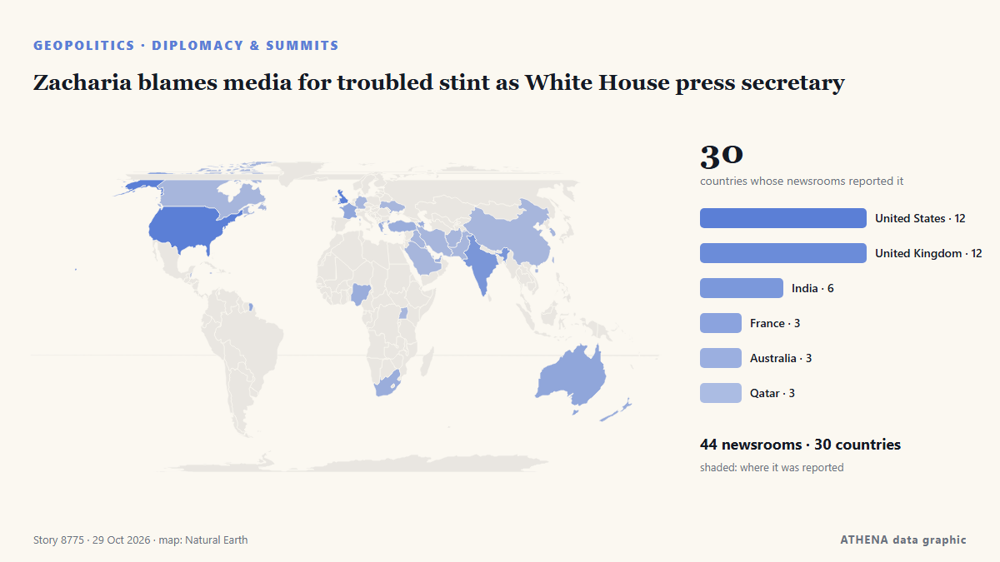

Zacharia blames media for troubled stint as White House press secretary

A White House Press official said Friday that Secretary Katie Zacharia was "let go" from her role after US President Donald Trump signaled she was on her way out, a week after he picked her for the… από France 24 English
Αναφέρθηκε ανεξάρτητα από 44 μέσα σε 30 χώρες από τις 16 Οκτ, πρώτο το France 24 English· η κάλυψη εξασθενεί. Το ATHENA εκτιμά τον κίνδυνο χαμηλό (1.1/10), κυρίως λόγω της εμβέλειάς του και της σοβαρότητάς του. Βεβαιότητα 87% (υψηλή): το επιβεβαιώνουν 44 ανεξάρτητα μέσα, μέση αξιοπιστία 75%. Μέσα ανά χώρα: Ηνωμένες Πολιτείες (6), Γαλλία (2), Ελλάδα (2). Κάλυψη: 16 Οκτ έως 16 Οκτ, 7 ώρες.
Γιατί έχει σημασία: Οι εξελίξεις στην ασφάλεια και τη διπλωματία μπορούν να μετατοπίσουν συμμαχίες, εμπόριο και αγορές πολύ πέρα από τις χώρες που εμπλέκονται.
Τι άλλαξε: 2 νέες αναφορές από 2 μέσα στο 24ωρο έως 29 Οκτ.
Πρώτη διατύπωση: Trump fires White House Press Secretary Katie Zacharia
Οι τίτλοι των ειδήσεων παρουσιάζονται στα αγγλικά, όπως δημοσιεύτηκαν.
Με μια ματιά
Επιλέγεται, βαθμολογείται και γράφεται από τη δημοσιευμένη μεθοδολογία του ATHENA. Κανένας συντάκτης δεν παρεμβαίνει σε μεμονωμένα γεγονότα. Πώς παράγεται ›
| 16 Oct 15:57 UTC | 46 |
|---|---|
| 17 Oct 03:57 UTC | 12 |
| 17 Oct 15:57 UTC | 2 |
| 18 Oct 03:57 UTC | 0 |
| 18 Oct 15:57 UTC | 0 |
| 19 Oct 03:57 UTC | 1 |
| 19 Oct 15:57 UTC | 1 |
| 20 Oct 03:57 UTC | 0 |
| 20 Oct 15:57 UTC | 0 |
| 21 Oct 03:57 UTC | 2 |
| 21 Oct 15:57 UTC | 0 |
| 22 Oct 03:57 UTC | 0 |
| 22 Oct 15:57 UTC | 1 |
| 23 Oct 03:57 UTC | 1 |
| 23 Oct 15:57 UTC | 0 |
| 24 Oct 03:57 UTC | 1 |
| 24 Oct 15:57 UTC | 0 |
| 25 Oct 03:57 UTC | 0 |
| 25 Oct 15:57 UTC | 0 |
| 26 Oct 03:57 UTC | 1 |
| 26 Oct 15:57 UTC | 0 |
| 27 Oct 03:57 UTC | 0 |
| 27 Oct 15:57 UTC | 1 |
| 28 Oct 03:57 UTC | 2 |
| 28 Oct 15:57 UTC | 0 |
| 29 Oct 03:57 UTC | 2 |
| 17 Oct 11:29 UTC | 1.9 |
|---|---|
| 17 Oct 13:56 UTC | 1.2 |
| 29 Oct 14:22 UTC | 1.1 |
Γιατί αυτοί οι αριθμοί
Σημασία
Κίνδυνος
Βεβαιότητα
Η κάλυψη — ποιος το ανέφερε και πότε
ο τίτλος όπως δημοσιεύτηκε · ανοίγει το πρωτότυπο- France 24 English · ΓαλλίαEmbattled new White House Press Secretary Zacharia 'let go' from her role
- Fast Company · Ηνωμένες ΠολιτείεςNew White House press secretary Katie Zacharia defends her legal background and first briefing amid criticism
- to vima · ΕλλάδαTrump Gives New White House Press Secretary Option to Quit
- Anadolu Agency (English) · ΤουρκίαTrump asks new White House spokeswoman Katie Zacharia to reconsider role
- PBS NewsHour · Ηνωμένες ΠολιτείεςTrump casts doubt on press secretary Katie Zacharia's future
- Indian Express · ΙνδίαTrump fires Katie Zacharia after five days as White House press secretary: Report
- Gulf News · Ηνωμένα Αραβικά ΕμιράταWhite House shake-up: Trump fires Katie Zacharia as press secretary after five days
- NPR · Ηνωμένες ΠολιτείεςKatie Zacharia is 'transitioning out' as press secretary, White House says
- Kurdistan24 (English) · ΙράκFox News Reports Press Secretary Is ‘Transitioning Out’
- CBC News · ΚαναδάςWhite House press secretary Katie Zacharia leaving her role a week after starting it: official
- Times of India · ΙνδίαTrump’s press secretary Katie Zacharia ‘let go’ five days into new job
- CNA (Channel NewsAsia) · ΣιγκαπούρηTrump's new press secretary out after less than week
- The National · Ηνωμένα Αραβικά ΕμιράταWhite House press secretary Katie Zacharia praises Trump as she leaves job - after five days
- The Straits Times · ΣιγκαπούρηTrump’s new press secretary Katie Zacharia out after less than a week
- to vima · ΕλλάδαWhite House Press Secretary Is Out One Week After Being Named to the Role
- ABC News Australia · ΑυστραλίαWhite House press secretary Katie Zacharia leaves after just days in role
- Arab News · Σαουδική ΑραβίαTrump’s new press secretary out after less than week
- The Hill · Ηνωμένες ΠολιτείεςScaramucci on Zacharia's reported firing: 'Records are made to be broken'
- Dawn · ΠακιστάνWhite House spokeswoman Katie Zacharia 'let go' from role, official says
- The Independent · Ηνωμένο ΒασίλειοTrump admits mistake and fires Katie Zacharia after less than one week as press secretary — breaking record
- Jamaica Observer · ΤζαμάικαTrump’s new press secretary looks close to exit after just one week
- APA (English) · ΑζερμπαϊτζάνWhite House press secretary Zacharia fired in less than a week after facing criticism
- Nile Post · ΟυγκάνταWhite House Press Secretary Katie Zacharia Leaves Role Days After Appointment
- Vanguard · ΝιγηρίαWhite House Press Secretary Katie Zacharia quits days into job
- Al Jazeera English · ΚατάρWhite House press secretary Katie Zacharia fired after five days on the job
- SABC News · Νότια ΑφρικήTrump reportedly fires White House spokeswoman Zacharia
- DW English · ΓερμανίαWhite House press secretary Zacharia exiting role after short tenure
- Stuff · Νέα ΖηλανδίαTrump press secretary Katie Zacharia sacked after five days
- Anadolu Agency (English) · ΤουρκίαTrump’s press secretary Katie Zacharia ‘transitioning out’ after 5 days
- The New Arab · INTTrump fires White House Press Secretary Katie Zacharia
- Euronews English · ΓαλλίαTrump's new press secretary leaves after less than a week following controversy
- Arab Times · ΚουβέιτKatie Zacharia: She Came, She Saw … She Was Gone in Just 5 Days
- Cyprus Mail · ΚύπροςWhite House Press Secretary Zacharia ‘let go’ from role, official says
- Al Jazeera English · ΚατάρTrump told new press secretary to ‘reconsider’ role
- News24 · Νότια ΑφρικήNews24 | White House Press Secretary Zacharia ‘let go’ from role, official says
- ProtoThema English ·Trump fires Katie Zachariah as White House Press Secretary just five days after she took office
- NPR · Ηνωμένες ΠολιτείεςKatie Zacharia is out as press secretary, White House says
- SBS News · Αυστραλία'It was an honour': Katie Zacharia breaks silence after White House firing
- The Independent · Ηνωμένο ΒασίλειοTrump just fooled around with Susie Wiles over Katie Zacharia. And he found out
- PBS NewsHour · Ηνωμένες ΠολιτείεςCapehart and Continetti on the White House press secretary's quick exit